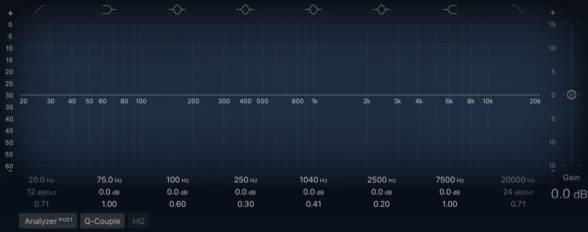
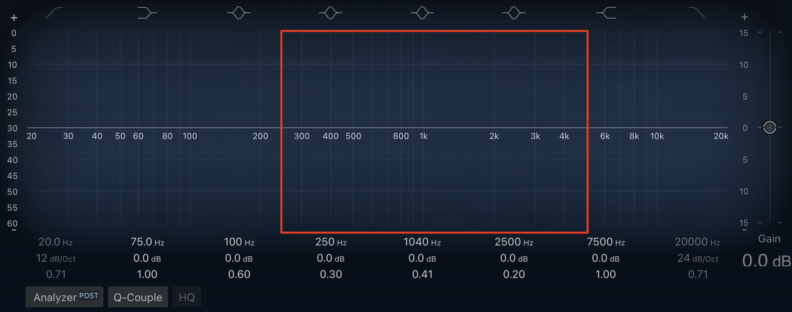
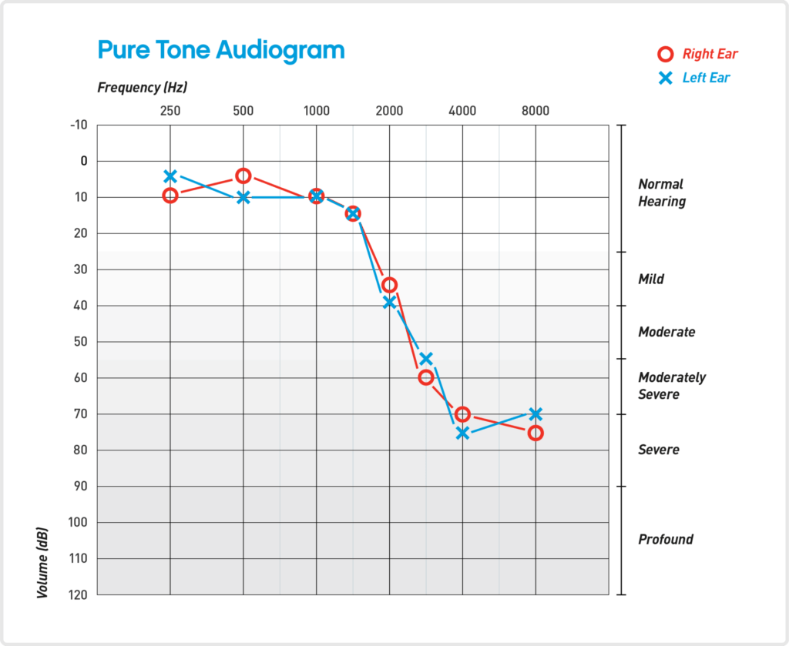

So I've been seeing patients for a while now, and there's something that's been bothering me the whole time: frequency terminology. The other day I saw a patient who's a member of AES — the Audio Engineering Society, which I was part of back when I worked as a sound designer in Hollywood. While we were discussing his hearing, he referred to 4 kHz as mid frequencies — "oh, I have hearing loss in the mids," he said. If you're a sound engineer, nothing about that sentence sounds wrong. But if you're an audiologist reading this, it probably just threw you off. So let's talk about it.
In the audiology world, audiologists refer to low frequencies as 125 Hz, 250 Hz, and 500 Hz; mid frequencies as 750 Hz, 1 kHz, 1.5 kHz, and 2 kHz; and the rest as high. In the low frequencies, we hear vowels and feel the energy of sound; the mid frequencies are where most speech information lies; and the high frequencies carry sibilance and consonant information, which is critical for speech discrimination. Generally, these descriptions would work well until... you meet patients who have backgrounds in sound and acoustics.

This is a screenshot of the EQ plugin in Logic Pro, the music production software on the MacBook Pro. The frequency range that a hearing test covers is marked here:

From the audio engineering point of view, the clinical hearing test misses a lot of sound information — below 250 Hz and above 8 kHz. During sound mixing, the sound quality changes a lot when those ranges are manipulated. Therefore, the clinician's categorization and the audio engineer's categorization can differ, leaving room for conflict.
The reason why the clinical hearing test was designed that way is easy to understand: the speech information. If you look at the frequency spectrum of the human voice, most of it is focused in this range. That's why in music and movies, cleaning up this range matters when lyrics and dialogue matter. For example: a −6 dB cut at 350 Hz for the power of the voice, an HF rolloff on ambience at 3 kHz to put focus on the dialogue, and so on.
However, clinicians, unless they have a background in sound, usually don't deal with the range outside of that box. From their perspective, low, mid, and high each take one third of the graph. Look at an audiogram (the graph of a hearing test).

So whose definition is correct?
From the audio engineering point of view, the mid frequencies are the frequencies between 250 Hz and 4 kHz. And from the audiology point of view, low is below 500 Hz, mid is 750 Hz–2 kHz, and high is 3 kHz and above. Looking at it that way, one person's mid is another person's high.
From the audiology point of view, the high frequencies are above 2 kHz, so 4 kHz is a high frequency. From the audio engineering point of view, the mid frequencies are 250 Hz–4 kHz, so 4 kHz is a mid frequency. It's actually the boundary.
When you're working in audio, what really matters is not the categories but the octave. An octave is a scale where the frequency doubles — 125 Hz, 250 Hz, 500 Hz, 1 kHz, 2 kHz, 4 kHz, 8 kHz, 16 kHz. It's a log scale, and the interval between 4 kHz and 8 kHz feels the same as the interval between 500 Hz and 1 kHz. On the audiogram, the frequencies are spaced evenly on the horizontal axis — that's also a log scale. 4 kHz sits right in the middle of the audiogram. For a clinician, 4 kHz is a high frequency; for a sound engineer, 4 kHz is a mid frequency. For someone who works with sound, 4 kHz is a mid frequency.
What I want to say is that the boundary of what is low, mid, and high is different depending on the field. There's no need to unify the terminology. There's no need to fight over whose definition is correct. The important thing is that patients and clinicians are able to have a conversation, and this is where the confusion can arise — it can lead to a misinterpretation, which is something I want to avoid.
So the next time a patient tells me that they have hearing loss in the mids, I'll ask them which frequencies they're talking about.